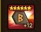
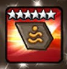
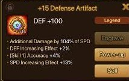

From thebigbearbutt.com
Violent runes are the strongest runes in the game. They give the monster a fixed chance to take another turn, essentially doubling
the monsters effectiveness. There are some subtle things about violent runes that may not be so obvious to beginners. For one, not
only are you taking an extra turn, but that extra turn means that the cool downs of all your skills decrease by one turn as well.
Furthermore, violent runes can be activated on the extra turn, although the activation rate decreases with each extra turn. This can lead to
scenarios where a monster uses its third skill, gets two extra violent turns, and is able to use the third skill again, all within
the "same" turn. Finally, even if a monster is stunned or otherwise immobilized, they can still "proc" a violent and get back into
action.
From sw-database.com
Will runes are the second strongest runes in the game. They provide immunity, which is a buff on a monster that makes the monster
immune to any debuffs, such as stuns, slows, defense breaks, etc. Will runes are applied at the beginning of the match, and last
one turn for each will set equipped (max of 3 turns if 3 will sets are equipped) unless they are removed. Within a battle, a defense
broken monster is about two times easier to kill, so having immunity and removing the immunity buff are big factors in determining
who wins a match.

From cyberspaceandtime.com
Swift runes are the third strongest runes in the game. Some would say they are the strongest runes in the game, as they give the
unit with the rune set an extra 25% speed, so teams that are running swift are able to go first, assuming equal rune quality between
the two players. However, the Summoner's War meta game is one that involves monsters with abilities that resist death, or make
it hard for a player to wipe the enemy on the first turn, making swift runes more of a YOLO strategy that can backfire if the
enemies are too tanky or have monsters that have abilities which resist turn one kills.

From reddit.com
As mentioned, there are 2 kinds of artifacts, a type artifact and an attribute artifact. Each artifact has 4 lines of stats on
them, which vary in terms of effectiveness. We see here an artifact for defense type monsters, with the line "additional damage
by x% of speed" being the most important stat for artifacts. As the name implies, it gives additional damage to the monster that
it is equipped on, equivalent to a percentage of their total speed. This damage is in addition to the monster's normal damage,
ignores any defense reduction, and applies per hit, making it ideal on monsters with attacks that hit multiple times.